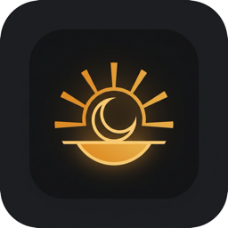

07:00
03
:
12
Wednesday
The problem
Your alarm went off.
Nothing happened.
Your Mac was asleep, so the built-in Clock stayed silent.
Matuta
It wakes the Mac
before
the alarm.
A power event, two minutes early. Close the lid — it still rings.
Before you sleep
It checks what would
keep it from waking you.
Earbuds connected
System muted
Volume 12%
One key turns it off.
SPACE

MATUTA
A macOS alarm clock that actually goes off.
Free · Open source · rakkunn.github.io/matuta
↻ Replay
Recording mode